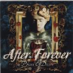

| Artist: | After Forever |
| Title: | Prison Of Desire |
| Label: | Transmission Records TM-023 |
| Length(s): | 54 minutes |
| Year(s) of release: | 2000 |
| Month of review: | 07/2000 |
| 1) | Mea Culpa | 2.00 |
| 2) | Leaden Legacy | 5.07 |
| 3) | Semblance Of Confusion | 4.09 |
| 4) | Black Tomb | 6.29 |
| 5) | Follow In The Cry | 4.06 |
| 6) | Silence From Afar | 5.52 |
| 7) | Inimical Chimera | 5.00 |
| 8) | Tortuous Threnody | 6.13 |
| 9) | Yield To Temptation | 5.53 |
| 10) | Ehpemeral | 3.05 |
| 11) | Beyond Me | 6.11 |